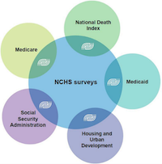
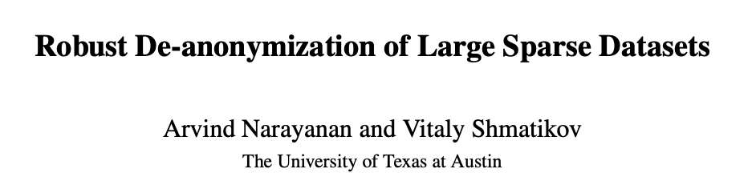
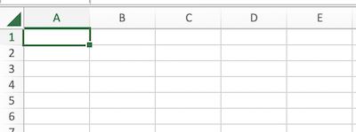

03-Ethics (Privacy and Dual Use)#
Goals of this lecture#
Case studies 2-3: data collection and privacy violations.
Refresher: Why ethics?
Ethical issues: the fundamentals.
What legal regulations exist?
What should individual researchers do?
Trade-offs between different ethical considerations.
Case Studies#
Case Study 2: An addition app sharing sensitive data#
Opioid addiction apps sharing data#
Telehealth apps growing in popularity:
As a result of the COVID-19 pandemic and efforts to reduce transmission in the U.S, telehealth services and apps offering opioid addiction treatment have surged in popularity.
But these apps may be accessing and sharing sensitive data:
Despite the vast reach and sensitive nature of these services, the research found that the majority of the apps accessed unique identifiers about the user’s device and, in some cases, shared that data with third parties.
What information is accessed, and how?#
Information about the device:
Five of the apps also access the devices’ phone number…and two access a users’ list of installed apps.
Information about a user’s location:
Seven of the apps request permission to make Bluetooth connections…can be used to track users in real-world locations.
Is this legal?#
Some say this practice violates laws about confidentiality of patient information, but:
While 42 CFR Part 2 recognizes the very sensitive nature of substance use disorder treatment, it doesn’t mention apps at all. Existing privacy laws are totally not up to speed.
In practice, a big problem is a lack of dedicated privacy staff:
Another likely reason for these practices is a lack of security and data privacy staff, according to Jonathan Stoltman, director at Opioid Policy Institute, which contributed to the research.
Case Study 3: A not-for-profit sharing mental health information#
The need for mental health support#
Crisis Text Line (CTL) is non-profit suicide prevention hotline.
Connects individuals (e.g., those suffering from depression) with volunteers.
In the process, records and collects data about these conversations.
Has called this “the largest mental health data set in the world”.
This data can be used to help identify especially urgent cases.
Data sharing has serious consequences#
In many cases, sharing this data can cause harm.
In 2018, U.S. border authorities refused entry to several Canadians who had survived suicide attempts, based on information in a police database.
Privacy and mental health more generally#
Of 132 studies surveyed:
The researchers in 85 percent of the studies didn’t address, either in study design, or in reporting results, how the technologies could be used in negative ways.
Refresher: why ethics for CSS?#
Reason 1: CSS has impact#
In CSS, our work can have real-world impact.
Is this impact positive?
Does this work have the potential to cause harm?
How does the potential harm compare to current harms?
Reason 2: CSS involves hard decisions#
We also face many difficult questions.
Hard question(s) of the day:
Does this work violate privacy or have harmful potential for dual use?
What kind of regulations and enforcement mechanisms are (or should be) in place to protect against this?
What can/should I do as an individual researcher?
The data-driven world#
Increasingly, our activities leave behind a digital trace:
Digital trace data are “records of activity (trace data) undertaken through an online information system (thus, digital).
The availability of data is part of the promise of “Big Data”.
But it also raises a number of conceptual and ethical issues.
Source: Hollingshead et al. (2021)
Data linkage#
Data linkage refers to the unification of corresponding datasets to enable a richer informational account of the unit of analysis.
For example, the CDC provides links between different data sources:

Source: Hollingshead et al. (2021)
De-anonymization#
Data linkage is a really powerful tool in our toolkit, but it also raises issues, such as de-anonymization.
De-anonymization is a data mining strategy in which anonymous data is cross-referenced with other data sources to re-identify the anonymous data source.
Sometimes, purpotedly anonymized datasets can be de-anonymized using data linkage. This happened famously in 2008 with the Netflix Prize Dataset.

Differential privacy as potential solution?#
Differential privacy is an approach to ensuring data security and de-identification.
A dataset/algorithm is “differentially private” if by looking at the output, one cannot tell whether any given individual’s data was included or not.
Differential privacy tries to mathematically formalize the notion of privacy to overcome the data linkage problem.
These “linkage attacks” motivate the need for a robust definition of privacy – one that is immune to attacks using auxiliary knowledge, including knowledge that a data curator cannot predict the availability of.
Counterpoint: differential privacy tends to decrease accuracy, as it involves injecting noise into a dataset.
We will revisit this later in the lecture.
Relevant research: Latanya Sweeney’s work on de-anonymization and data linkage.
Check-in#
Reflection: how many digital accounts do you have (social media, Amazon, Netflix, etc.)? Do you think someone could deduce your identity by linking these accounts together?
Data archiving#
The recent replicability crisis in science has prompted a movement towards “open science”.
This includes making data publicly available.
In fact, many scientific journals now require that an anonymized dataset be made available to other researchers.
While good for transparency, this also raises ethical concerns around consent.
More generally, the widespread practice of data sharing by companies means that our data may be made accessible to third parties.
Data sharing and consent#
Although participants/users may consent to some uses of their data, public availability means that other actors can use that data too:
Informational flows open the possibility that a person’s information will be used for different purposes than for those originally intended.
When it comes to companies sharing data, a big problem is “legalese” in their Terms of Service:
It is entirely plausible that for some users, a thorough reading of the ToS would result in the revocation of consent. Nevertheless, the expression of “consent” at one point in time effectively means that a digital user becomes datafied for diverse purposes.
Check-in#
Can you think of examples of how your digital data might be used for multiple purposes you didn’t consent to?
Ownership#
Who owns the data in your “digital trace”?
Consider the following kinds of data:
Location data.
Purchasing history.
Social media contacts and activity.
Chat messages.
Netflix activity.
Reflection: Who “owns” these data? Who should own it?
Not a new issue!#
Henrietta Lacks was an African-American woman whose cancer cells were used for the HeLa line, an “immortal cell line” used for scientific research.
The “HeLa line” has facilitated many discoveries, including the polio vaccine.
But Henrietta Lacks was not told about this use, nor did she consent.
This controversy inspired the Common Rule in medicine, which requires that doctors inform patients whether their medical data (tissues, etc.) will be used for research.

Data Privacy: Legal considerations#
Before we consider what we can/should do as individuals, it’s important to understand the landscape of legal regulations surrounding data ethics and privacy.
What regulations exist in the USA?#
Within the USA, no single law to regulate all kinds of data.
HIPAA: laws about how health information can be shared.
FERPA: laws about how educational information (e.g., student records) can be shared.
ECRA: laws about how electronic communications information can be accessed and shared.
Though specific states have more comprehensive laws.
Privacy regulations in the state of California#
The California Privacy Rights Act (CPRA) includes stipulations about data privacy.
Private right of action: individuals can sue companies for privacy violations.
Global opt-out.
remove one’s self from data sharing by device or browser, instead of being forced to opt out on each site individually
Right to correct inaccurate personal information.
Right to enhanced transparency.
Regulations in the EU#
General Data Protection Regulation (GDPR): very extensive regulations about data privacy in the European Union.
Regulations include (but not limited to):
Data protection principles: limit the purpose and extent of data (i.e., data minimization).
Accountability: teams must have dedicated technical staff for data protection.
Many teams must have a Data Protection Officer (DPO).
Consent: must be freely given, can be withdrawn by data subjects at anytime.
Privacy rights: data subjects given a set of rights.
Includes right to be informed, right to erasure, right to data portability, and more.
What do privacy advocates want?#
Advocate for various rights:
Rights over data collection: access to data that companies have collected about you (and request deletion, etc.).
Opt-in consent: opt in, not out, of data collection.
Data minimization: only collect data absolutely necessary for product.
Non-discrimination: service should not be altered for people who opt-out.
This also requires some enforcement mechanism:
Data Privacy: Researcher considerations#
What can (and should) we do as individual researchers?

“Ten simple rules”#
Zook et al. (2017) describe “ten simple rules” to follow for responsible Big Data research.
Here, we will cover the rules most relevant to bias and privacy.
As we read each rule, reflect:
How can I use this rule in my own research?
Is this rule precise enough to be useful?
Rule 1: Data are people and can do harm.#
One of the most fundamental rules of responsible big data research is the steadfast recognition that most data represent or impact people.
This also connects to our lecture on bias:
Harm can also result when seemingly innocuous datasets about population-wide effects are used to shape the lives of individuals or stigmatize groups, often without procedural recourse.
Recommendation:
Start with the assumption that data are people (until proven otherwise), and use it to guide your analysis.
Rule 2: Privacy ≠ binary value#
Privacy is not just a binary value:
Looking at a single Instagram photo by an individual has different ethical implications than looking at someone’s full history of all social media posts.
Sharing is okay in some contexts and not in others:
Likewise, distributing health records is a necessary part of receiving health care, but this same sharing brings new ethical concerns when it goes beyond providers to marketers.
Recommendation:
Situate and contextualize your data to anticipate privacy breaches and minimize harm.
Rule 3: Guard against reidentification#
Many examples of “anonymized” data being de-anonymized:
When datasets thought to be anonymized are combined with other variables, it may result in unexpected reidentification, much like a chemical reaction resulting from the addition of a final ingredient.
“Big data” allows for combining many different features to identify a person:
Surprising to many, unlabeled network graphs—such as location and movement, DNA profiles, call records from mobile phone data, and even high-resolution satellite images of the earth—can be used to reidentify people.
Recommendation:
Identify possible vectors of reidentification in your data. Work to minimize them in your published results to the greatest extent possible.
Rule 4: Ethical data sharing#
Data sharing is an important part of research:
For example, in rare genetic disease research, biological samples are shared in the hope of finding cures, making dissemination a condition of participation.
But we must be careful about not violating the terms of our consent:
However, we caution that even when broad consent was obtained upfront, researchers should consider the best interests of the human participant, proactively considering the likelihood of privacy breaches and reidentification issues.
Recommendation:
Share data as specified in research protocols, but proactively address concerns of potential harm from informally collected big data.
Rule 8: Design for auditability#
An important part of responsible data practices is building systems that can be easily audited:
Responsible internal auditing processes flow easily into audit systems and also keep track of factors that might contribute to problematic outcomes.
One benefit of this is forcing researchers to debate the tough questions:
Designing for auditability also brings direct benefits to researchers by providing a mechanism for double-checking work and forcing oneself to be explicit about decisions, increasing understandability and replicability.
Recommendation:
Plan for and welcome audits of your big data practices.
Data statements#
If you compile and release a dataset, you can attach a data statement.
A data statement is a characterization of a dataset that provides context to allow developers and users to better understand how experimental results might generalize, how software might be appropriately deployed, and what biases might be reflected in systems built on the software.
This is one way to make your data more transparent.
What does this involve?#
Motivation for creation of dataset:
Why was it created?
What other tasks could the dataaset be used for?
Dataset composition:
What is each “instance”––i.e., “row”––in the dataset?
How many instances are there?
Dataset maintenance:
Who is responsible for maintaining the dataset?
Who should be contacted with questions?
Legal considerations:
Were individuals informed about data collection? Did they consent?
Could this dataset expose people to harm or legal action?
Does this dataset comply with the GDPR legal standards?
Trade-offs: privacy and fairness in conflict#
In these lectures, we’ve discussed two pillars of ethical CSS:
Fairness.
Privacy.
Both of these are challenging on their own. Yet the problem is made more complex when we consider both criteria at once.
Differential privacy can have disparate impact#
As discussed before, differential privacy (DP) is an approach to minimizing the risk of de-anonymization.
Yet recent research (Bagdasaryan et al. (2019) has found that in some many, implementing DP leads to disparate impact.
Models trained with DP have systematically lower accuracy for under-represented groups.
Accuracy of DP models drops much more for the underrepresented classes and subgroups
Why disparate impact?#
Differential privacy works by effectively adding noise to observations in a dataset.
This typically decreases accuracy across the board.
However, because some groups are systematically under-represented, accuracy is most impacted for these groups.
Fundamentally, this connects back to issues of biased data.
Datasets often under-represent certain groups, which can lead to harmful impacts down the road.
One solution is creating balanced data, e.g., gender shades (Buolamwini & Gebru, 2018).
Algorithmic fairness can create privacy risks#
One approach to algorithmic fairness is forcing a model to produce identical behavior across groups.
E.g., demographic parity.
But to accomplish this, the model must weight some data points more than others. This can lead to data leakage:
We show that fairness comes at the cost of privacy, and this cost is not distributed equally: the information leakage of fair models increases signifcantly on the unprivileged subgroups, which are the ones for whom we need fair learning.
Conclusion#
Work in Computational Social Science has the potential for real-world impact.
As researchers, we must be conscious of the potential for harmful impact––and try to mitigate or avoid this harm.
Two pillars of ethical research are fairness and privacy.